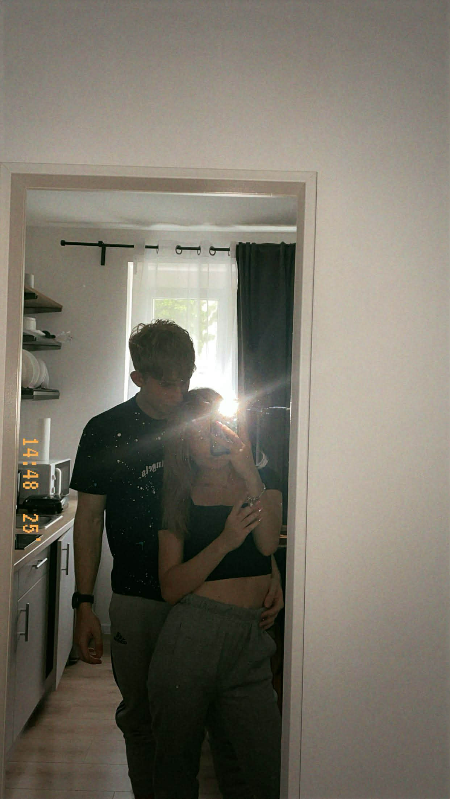
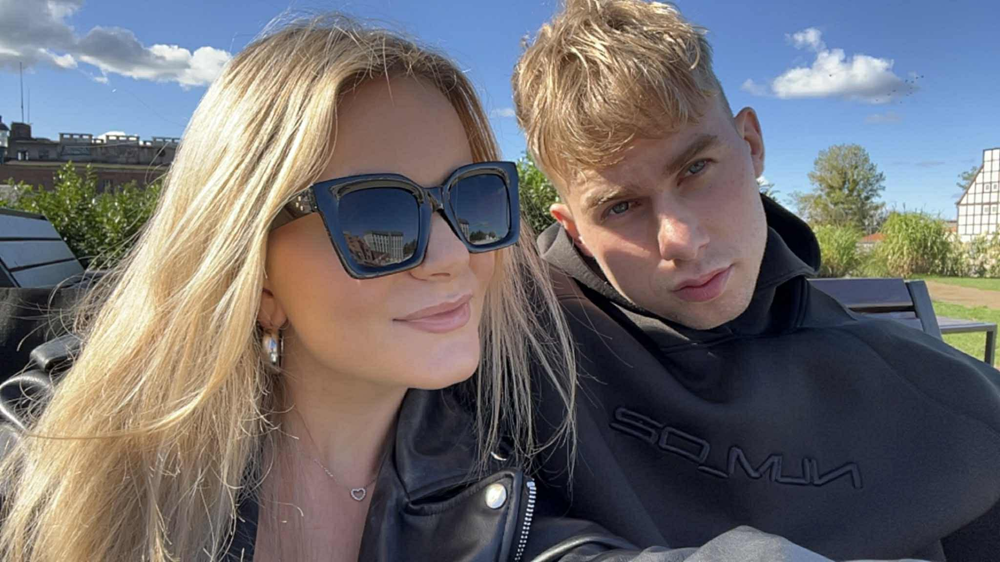

Zapraszam Cię do walentynkowego centrum rozrywki. Przygotowałem dla Ciebie kilka niespodzianek.
Postęp: 0/6 (wymagane)
To zdjęcie przypomina mi, że największe szczęście mam tuż obok siebie.
Tu zrozumiałem, jak bardzo chcę tworzyć z Tobą kolejne wspomnienia.
Ten uśmiech to mój ulubiony widok
Możesz grać we wszystkie gry ile chcesz! Baw się dobrze.
⚠️ Wystarczy wygrać w DWIE dowolne gry, aby odblokować prezent!
Wybierz poziom:
Zdobądź 10 punktów.
❤️ +1 | 💣 -2 | Upuszczenie -1
Wynik: 0/10
Zgadnij 5-literowe hasło. Tylko polskie słowa!
Wylosuj 3 serca (❤️), aby wygrać!
Wybierz poziom egzaminu:
Pytanie: 1 / 8
Sprawdźmy, czy naprawdę jesteśmy dla siebie stworzeni...
Odpowiedz na 8 pytań, aby otworzyć sejf.
Jeśli nie pamiętasz, kliknij w serduszko ❤️ – ono Ci podpowie!
Pytanie: 1 / 8
Udało się! Teraz możesz przeczytać mój list.
Kochana Wiktorio,
Kocham Cię za to, jaka jesteś. Za Twoje dobre serce, za spokój, który wnosisz do mojego życia i za to, że mimo wszystkiego potrafisz być tak ciepłą osobą. Kocham Cię za to, że mnie wspierasz i jesteś ze mnie dumna. Twoje słowa naprawdę mają dla mnie znaczenie. Przy Tobie czuję się jak w domu — bez udawania, bez stresu, po prostu sobą. 16.05.2025 to dla mnie coś więcej niż data. A Gdańsk i Twoja radość przy morzu tylko upewniły mnie, że chcę tworzyć z Tobą kolejne wspomnienia. Po prostu dziękuję, że jesteś. I że mogę być obok Ciebie.
Twój ❤️
Kliknij poniżej, aby odebrać coś specjalnego: